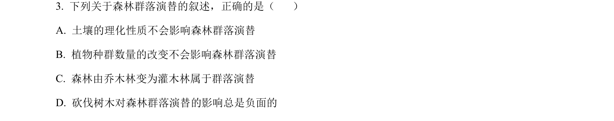
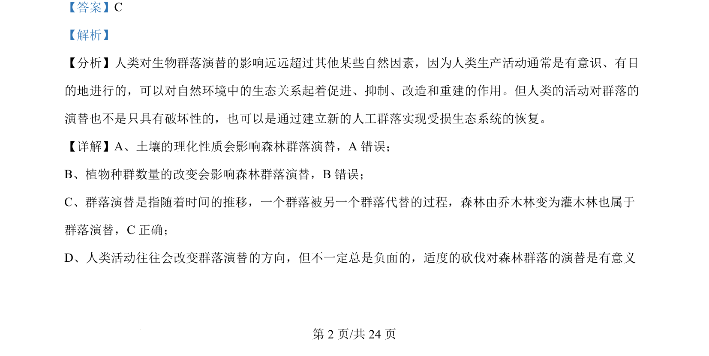

考点：群落演替 人类活动对演替的影响

该题考查森林群落演替的概念及影响因素，判断正确叙述。

📄 原 PDF 第 2 页：
素材/真题/吉林/2008-2024·（吉林）生物高考真题/2024年高考生物试卷（辽宁）（解析卷）.pdf
【答案】C 【解析】 【分析】人类对生物群落演替的影响远远超过其他某些自然因素，因为人类生产活动通常是有意识、有目 的地进行的，可以对自然环境中的生态关系起着促进、抑制、改造和重建的作用。但人类的活动对群落的 演替也不是只具有破坏性的，也可以是通过建立新的人工群落实现受损生态系统的恢复。 【详解】A、土壤的理化性质会影响森林群落演替，A 错误； B、植物种群数量的改变会影响森林群落演替，B错误； C、群落演替是指随着时间的推移，一个群落被另一个群落代替的过程，森林由乔木林变为灌木林也属于 群落演替，C正确； D、人类活动往往会改变群落演替的方向，但不一定总是负面的，适度的砍伐对森林群落的演替是有意义